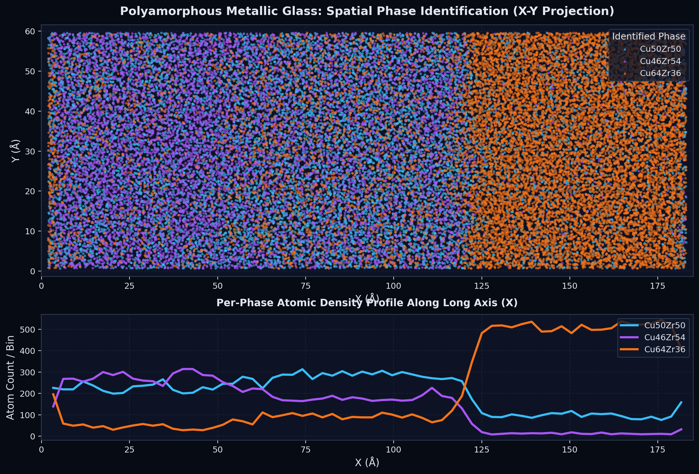
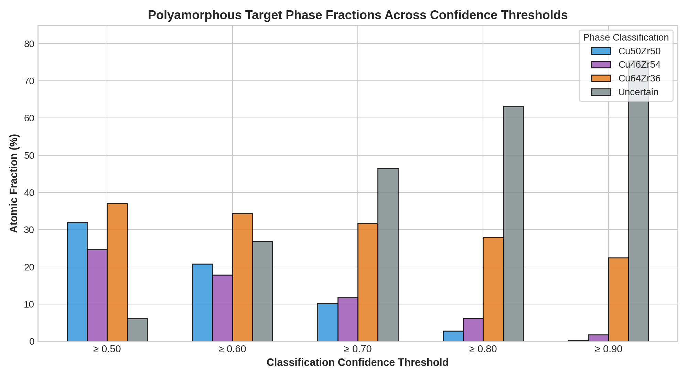
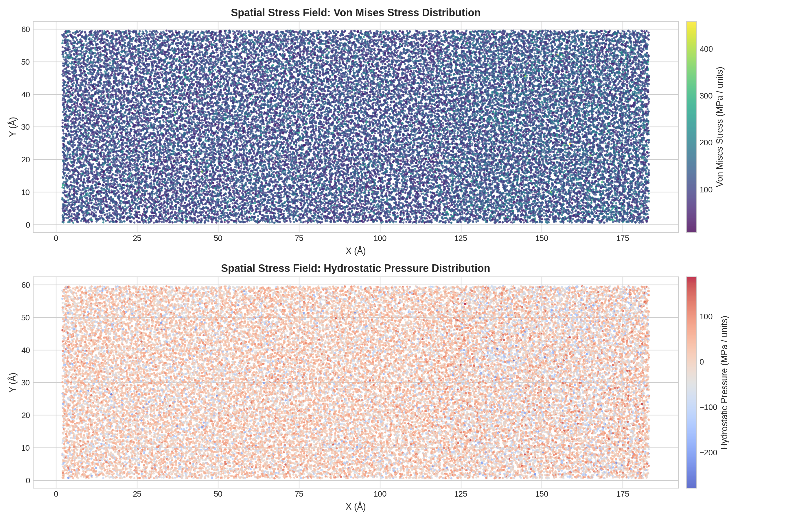
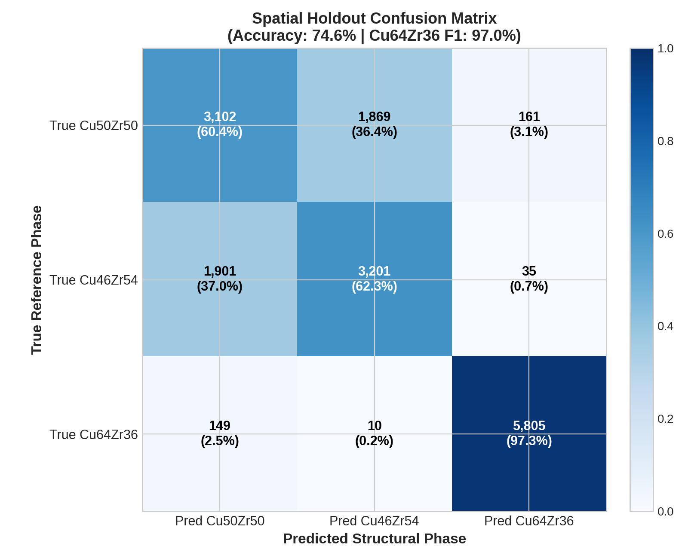
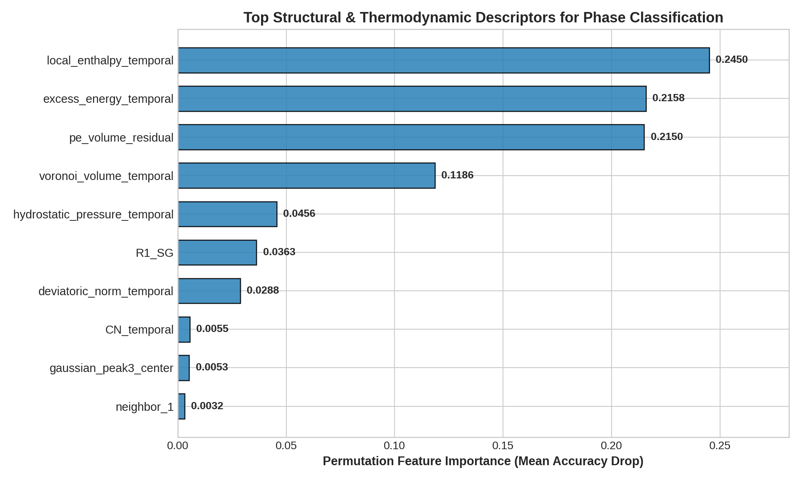
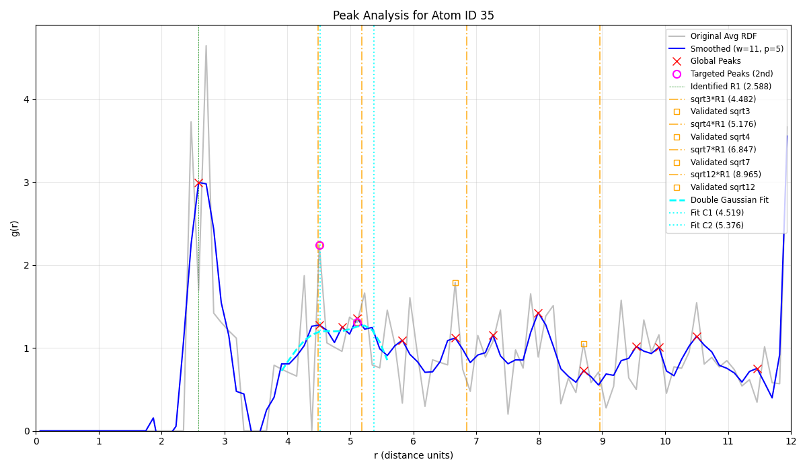

Combining atomistic molecular dynamics post-processing with material-agnostic gradient-boosted classification to identify and map polyamorphous phase boundaries in Cu-Zr alloys at the atomic scale.




| Phase Class | Composition | F1 Score | Target Atoms (0.50 Conf) | Transition Type |
|---|---|---|---|---|
| Phase 0 | Cu50Zr50 | 0.6033 | 11,799 (32.0%) | Continuous Gradient |
| Phase 1 | Cu46Zr54 | 0.6266 | 9,113 (24.7%) | Continuous Gradient |
| Phase 2 | Cu64Zr36 | 0.9703 | 13,654 (37.1%) | Sharp Structural Boundary |
| Uncertain | Ambiguous / Interface | - | 2,262 (6.1%) | Interfacial Atoms |
This confusion is primarily physical, not a model defect. Their nominal composition differs by only 4%, and the interface is a smooth compositional gradient extending over ~40 Å rather than a discrete structural boundary. As a result, local coordination polyhedra, Voronoi descriptors, and short-range-order distributions overlap strongly, so atoms in the gradient do not have a unique hard class label. The lower F1 scores therefore reflect intrinsic label ambiguity; continuous Cu-fraction regression (R² = 0.938), spatial smoothing, and an uncertain/interface state are more appropriate for this region.
The Phase A (Cu50Zr50) vs Phase B (Cu46Zr54) interface represents a smooth, continuous compositional gradient over ~40 Å (R²=0.938), resulting in partial label ambiguity. In contrast, Phase C (Cu64Zr36) undergoes a sharp structural transition over 12 Å, allowing near-perfect classification (F1 = 0.97).


| Artifact Name | Format | Description | Action |
|---|---|---|---|
| predictions.csv | CSV (~9.8 MB) | Full per-atom dataset with coordinates, whitelisted features, predictions, and confidence scores | Download CSV |
| predicted_phases.xyz | Extended XYZ | OVITO-ready 3D coordinates tagged with atom species, predicted phase index, and confidence | Download XYZ |
| model.pkl | Pickle / Joblib | Serialized HistGradientBoostingClassifier model with embedded training metadata | Download Model |
| validation_summary.json | JSON | Rigorous benchmark validation metrics and confusion matrix results | View JSON |
| phase_mapping.csv | CSV | Index to phase label mapping table (0: Cu50Zr50, 1: Cu46Zr54, 2: Cu64Zr36) | View Mapping |